47 looks · 6 collections
Find your look.
Shoot with it.
Snapper is a camera for film looks. Swipe through them on the live preview, take the shot in the one you like, then keep it as your own style for every photo after.
Free to download, with 9 looks, editing and a personal style. iPhone, iOS 17 or later.
- Looks
- 47
- Free looks
- 9
- Watermarks
- 0
- Accounts
- 0
Looks
Six collections, one for every kind of light.
Every collection has at least one free look. Drag across a photo to compare it with the original.
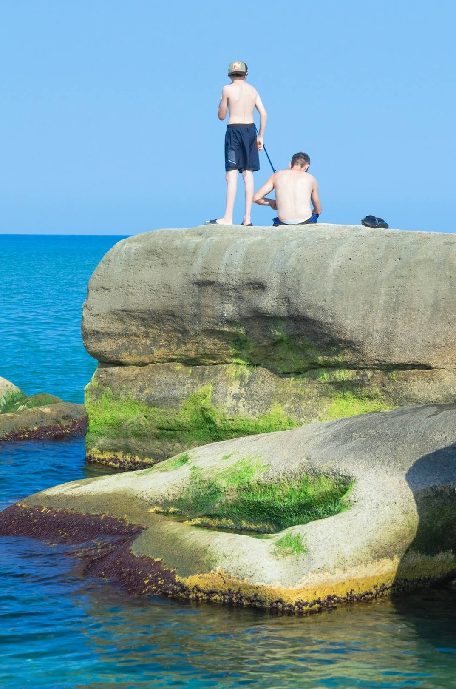
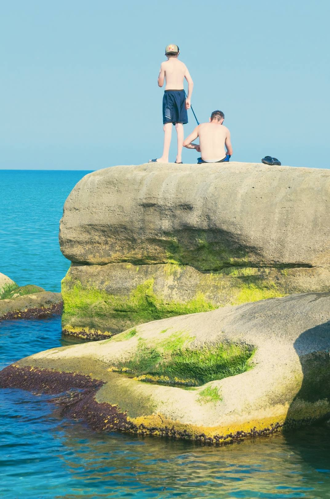
OriginalBoardwalkCollection 01/06
Disposable
Sun-faded, warm and a little overexposed, like a 90s throwaway camera.
- Boardwalk
- Postcard
- Flashbulb
- Sunburn
- Backyard
- Road Trip
- Pool Party
- Corner Shop
- Expired
- Mixtape
Free look
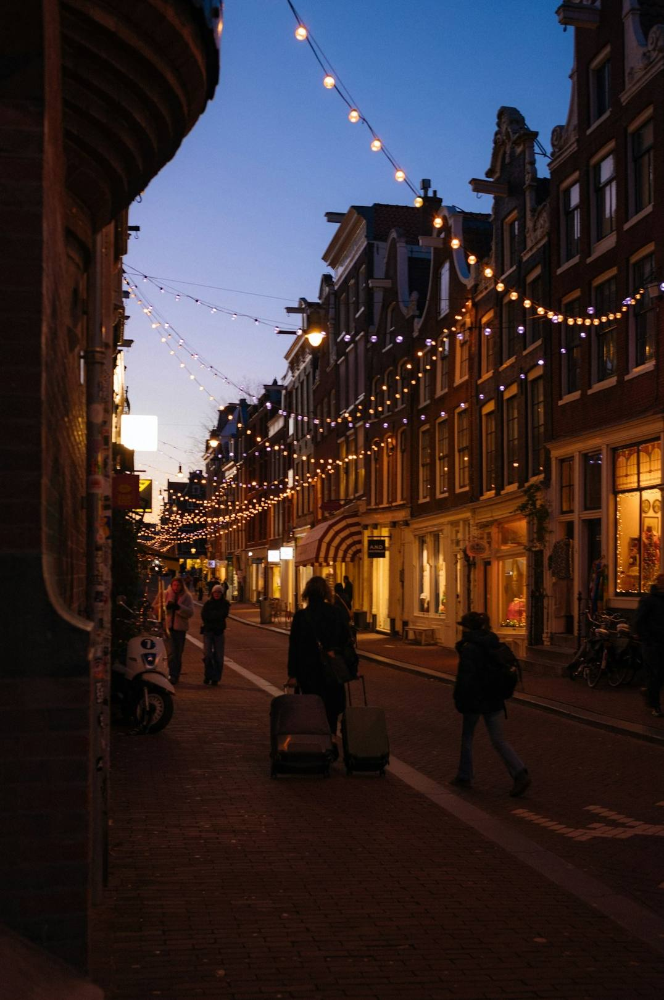
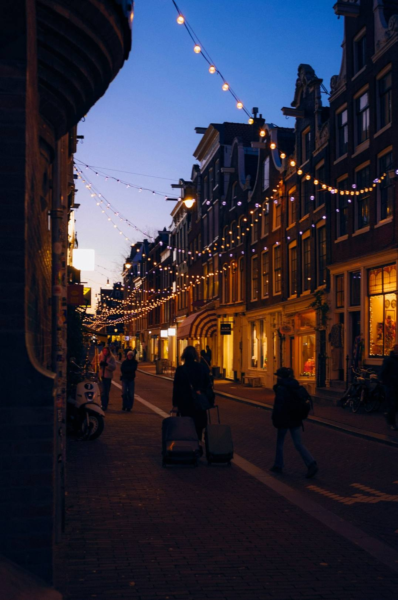
OriginalBlue HourCollection 02/06
Neon Nights
Teal shadows, warm skin and glowing signs for the city after dark.
- Afterglow
- Last Train
- Neon
- Midnight
- Lantern
- Arcade
- Blue Hour
- Downpour
- Taxi
- Vapor
Free look
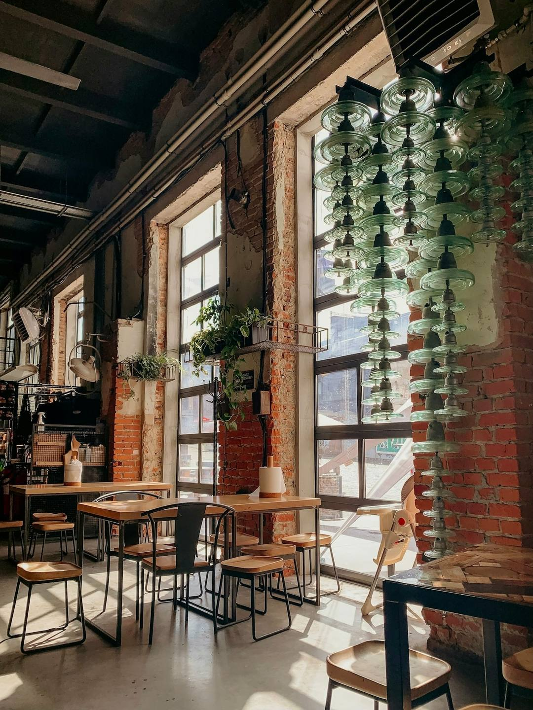
OriginalCreamCollection 03/06
Soft Portrait
Gentle contrast, creamy highlights and skin that looks like skin.
- Cream
- Silver
- Studio
- Peach
- Linen
- Honey
- Silk
- Porcelain
- Petal
- Matte
Free look
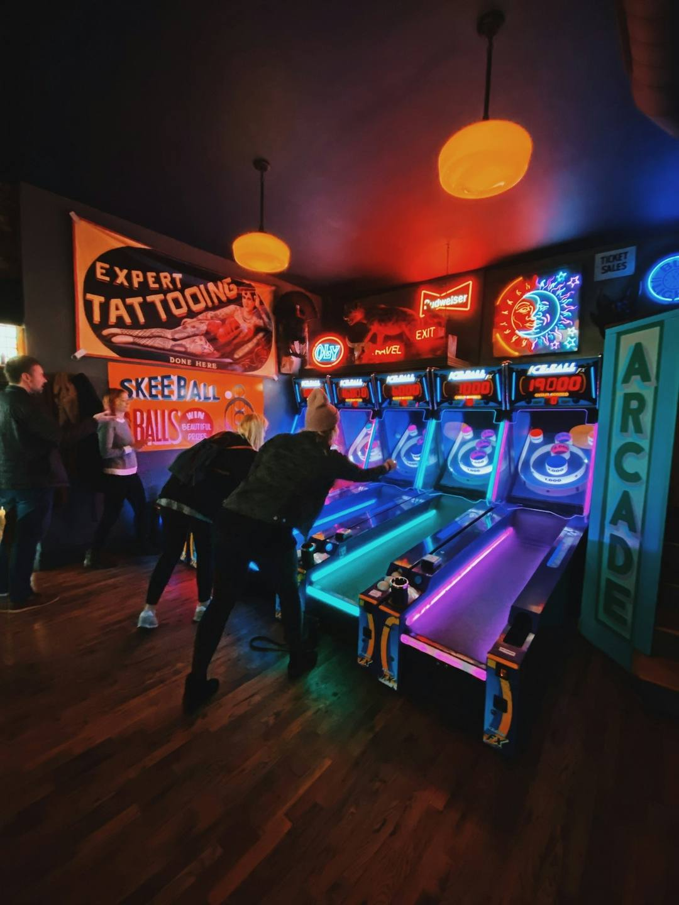
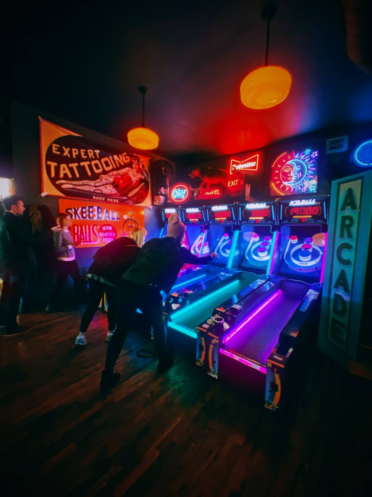
OriginalOverdriveCollection 04/06
Overclock
Neon glow, broken signals and chrome-edged colour from a future that never happened.
- Overdrive
- Redline
- Signal
- Chrome
- Hologram
Free look
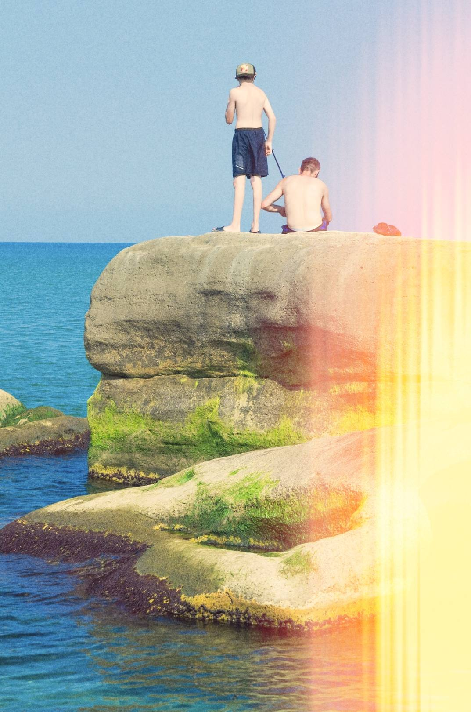
OriginalLeakCollection 05/06
Darkroom
Grain, halation and faded colour from old film and shoebox prints.
- Halo
- Crossroad
- Instant
- Leak
- Grit
- Heirloom
Free look
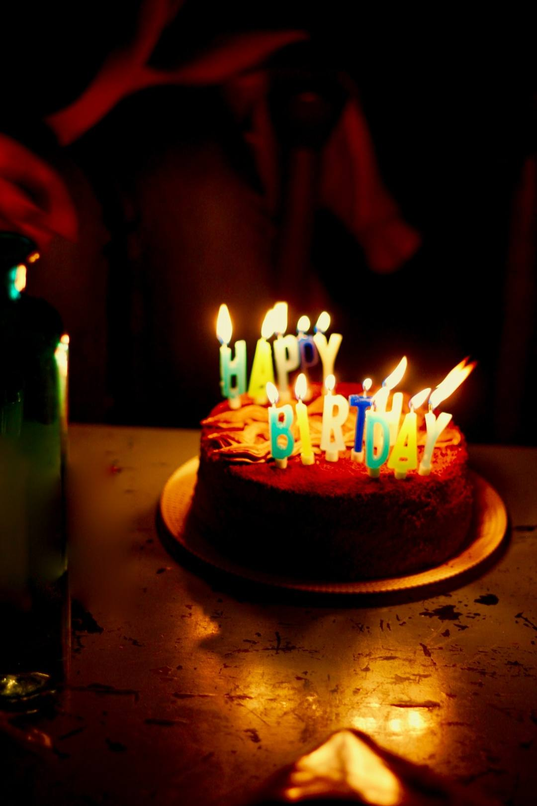
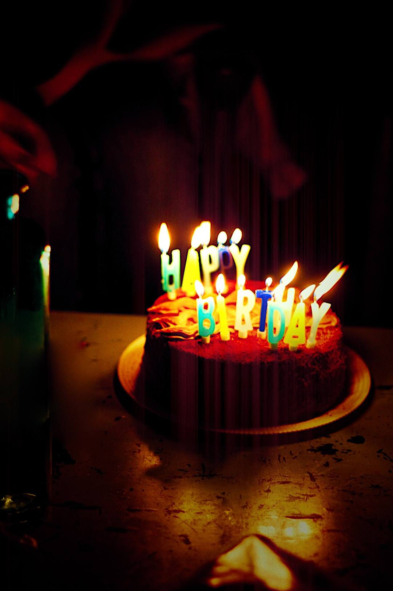
OriginalAfterpartyCollection 06/06
Digicam
Harsh flash, cool skin and crunchy pixels from a 2000s pocket camera.
- Afterparty
- Y2K
- Memory Card
- Fluoro
- Low Batt
Free look
Camera
See the look before you take the shot.
Every look runs on the live preview, so what you frame is what you get.
Swipe to change looks
Swipe across the preview to try the next look, or turn the dial to browse a collection. Your favorites come first.
Shoot with your style
Pick a saved style on the camera and its strength and adjustments are in every shot.
Camera Control
On iPhone 16 and later, light-press Camera Control to scroll looks and exposure without touching the screen.
Straight from the Lock Screen
Make Snapper the camera for the Lock Screen, Control Center and Camera Control, with your look ready to go (iOS 18).
Manual when you want it
Manual focus, ISO and shutter speed, white balance presets and exposure compensation.
Framing tools
Grid, level, photo ratios, a self-timer and flash.
Editor
Edit any photo. Keep the original.
Edit what you shot or import from your library. Every edit stays adjustable, and the original is never changed.
- Original
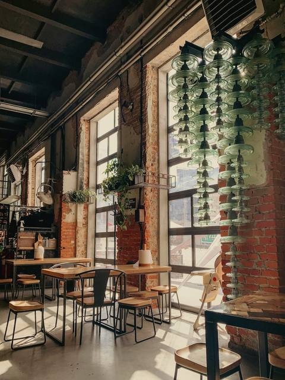
CreamSoft Portrait- HoneySoft Portrait
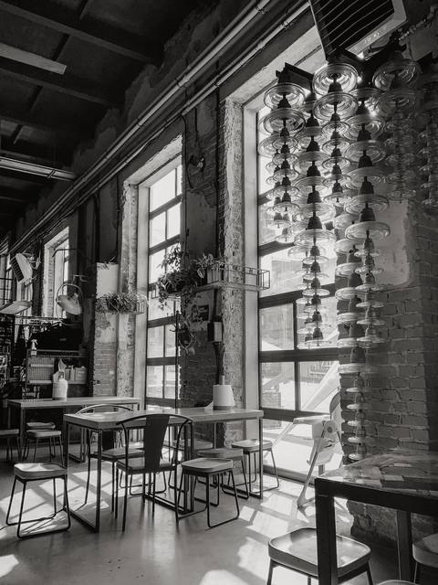
SilverSoft Portrait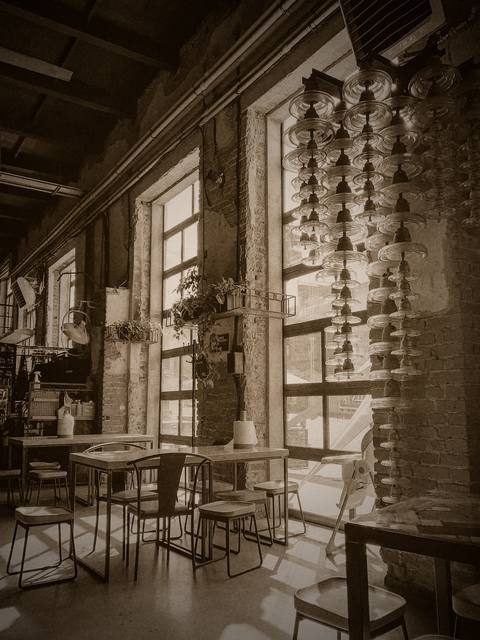
HeirloomDarkroom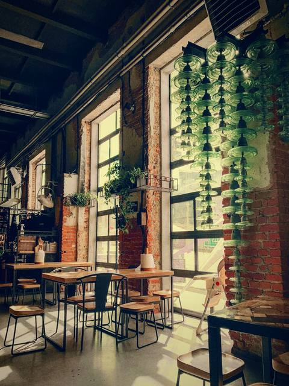
CrossroadDarkroom
- Adjust
- Brightness, contrast, saturation, warmth, fade, grain, highlights and shadows.
- Crop & straighten
- Ratios or free crop, straighten, rotate and flip.
- Curves Premium
- RGB and single-channel tone curves over a live histogram.
- Color mixer Premium
- Change the hue, saturation or brightness of one color family.
- Split toning Premium
- One color in the highlights, another in the shadows.
- Film effects Premium
- Bloom, halation and vignette, scaled to every size you export.
- Subject & background Premium
- Snapper finds the subject on your iPhone. Edit it and the background separately, and refine with a brush.
- Frames & layouts Premium
- Borders and square, post or story canvases that keep your whole photo.
- Date stamp
- A printed date in the corner, checked before you save.
- Versions
- Keep Warm, Black & White and the Original side by side, sharing one original.
- Styles
- Save a look with its adjustments, shoot with it, or share it as a file. One is free.
- Style a set Premium
- Apply a style, frame or layout to a whole set of photos at once.
Privacy
Your photos stay on your iPhone.
No account to make, nothing tracked, no data collected. Looks, editing and subject detection all run on the device. Privacy Policy
Questions
Good to know
Is Snapper free?
Yes. It's free to download, with 9 looks, editing, the date stamp, one personal style and watermark-free exports. Premium adds every look and tool.
Can I save a photo I edited with a Premium look?
With Premium, yes. Without it, tap Save Without in the editor to save the photo free without its Premium parts. Snapper keeps your full edit.
Is there a one-time purchase?
Yes. Lifetime is paid once, never renews and covers all current and future looks and tools.
Which iPhones does it work on?
Any iPhone with iOS 17 or later. The Lock Screen camera and Control Center button need iOS 18, and Camera Control needs iPhone 16 or later.
How do I move to a new iPhone?
Settings › Backup makes one file with every original, edit, version and style. Open it in Snapper on the new iPhone.
More answers on the Support page.
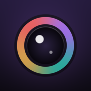
Find your look.
Get Snapper on the App StoreFree on iPhone